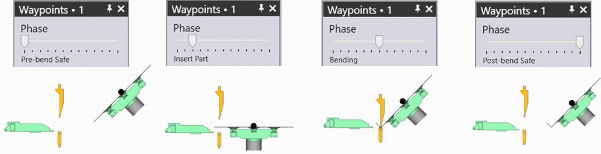
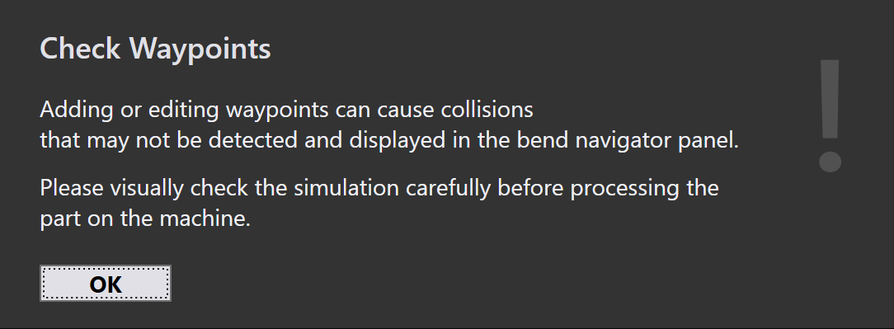

Vägpunkter
Översikt
Varje rörelse av BendMaster består av vägpunkter som passeras en efter en. Alla vägpunkter för en rörelse bestäms av TecZone, men de flesta av dem kan justeras. Punkter som är direkt relaterade till spårningen under böjningsprocessen kan inte ändras. Olika inställningar som används för att kontrollera vägpunkterna listas nedan:
-
Ändra positionen för en vägpunkt
-
Infoga en ny vägpunkt eller ta bort en befintlig vägpunkt
-
Justera rörelseegenskaper som hastighet och interpolering
-
Lägg till en ny vägpunkt på önskad position
För att komma åt panelen Vägpunkter:
-
Klicka direkt på robotens räls
-
Klicka på länken Waypoints från Pickup-panelen, Bend-panelen, Regrip-panelen eller Deposit-panelen.
-
Klicka på vägpunktslänken i någon av RG-Stations-panelerna


Panel för Vägpunkter

En typisk vägpunktpanel visas bredvid:
-
Reglaget Phase visar steg för steg-rörelsen av en vägpunkt. Varje fas återspeglar en speciell robotoperation som pickup, bend, regrip och deposit.
-
Använd alternativet Display för att visa:
-
grip point
-
wrist point
-
robot axes.
-
-
Positionen och vinkeln för handleden eller greppet visas och kan redigeras. Om robotaxlarna väljs visas robotaxelvärden och kan redigeras.
-
Det gula spåret visar banan från föregående steg till detta, och från detta steg till nästa (se bilden nedan). De 3 små trianglarna indikerar de lokala X- och Y-koordinaterna för roboten (handled eller grepp).
-
Reglaget Simulate används för att flytta simuleringen från föregående fas till nästa fas. Om detta är i mitten, är det den faktiska fas vi redigerar.
-
Inställningen Interpolate används för att växla mellan linjära och axelorienterade interpoleringar.
-
Inställningarna Speed och Rounding används för att redigera hastighets- och noggrannhetsinställningen för detta steg.
-
Fältet Regrip stations används för att ändra positionen för omgreppsstationer längs dess axel.
-
Alternativet Insert används för att skapa ny vägpunkt genom att ange nya värden. Nyligen tillagda vägpunkter kan tas bort med alternativet Remove.
-
Använd knapparna Prev och Next för att gå till nästa eller föregående steg (eller du kan också använda vänster- och högerpiltangenterna). Genom att klicka på knappen Next visas varje steg i en fas. I slutet av fasen visas nästa motsvarande vägpunktpanel.
Egenskaper för vägpunkter
Beroende på processens tillstånd får varje vägpunkt en uppsättning attribut som rör typen av interpolering, hastigheten och precisionen av rörelsen. Om det behövs kan dessa attribut ändras.
Dessa inställningar styrs i avsnittet Avancerat i vägpunktpanelen.
| Interpolate-typ | Beskrivning |
|---|---|
Linear |
Linjär rörelse av TCP:n längs en bana |
Axis |
Rörelsen från startpositionen till slutpositionen
är så snabb som möjligt, oavsett bana. |
| Speed-typ | Beskrivning |
|---|---|
Max. |
Maximal hastighet |
Fast |
75% av maximal hastighet |
Medium |
50% av maximal hastighet |
Reduced |
30% av maximal hastighet |
Slow |
20% av maximal hastighet |
| Rounding-typ | Beskrivning |
|---|---|
Max. |
Avrundning startar vid 50% av den kortare banlängden |
Large |
Avrundning startar vid 35% av den kortare banlängden |
Medium |
Avrundning startar vid 20% av den kortare banlängden |
Reduced |
Avrundning startar vid 10% av den kortare banlängden |
Fine |
Avrundning startar vid 5% av den kortare banlängden |
Exact |
Kalibreringspunkten närmas exakt utan överlappning |

-
Banlängd mellan vägpunkten och slutpunkten
-
Utförd längd
-
Banlängd mellan startpunkten och vägpunkten
-
Vägpunkt 3 (slutpunkt)
-
Vägpunkt 2 (avrundningspunkt)
-
Vägpunkt 1 (startpunkt)
Visa vägpunkter
När en böjdel förbereds beräknas alla vägpunkter automatiskt för varje rörelsfas. Dessa punkter kan simuleras fas för fas med en motsvarande beskrivning.

Bilderna nedan visar vägpunktfaserna för den första böjoperationen (i sidovy):

Ändra vägpunkter
En vägpunkts plats kan ändras om det behövs, till exempel för att förhindra att man går över axeln.
Bland andra aspekter som rör kollisionsundvikande kan oönskade vägpunkter elimineras eller nya vägpunkter kan läggas till.
-
När en befintlig vägpunktsposition ändras visar TecZone ett varningsmeddelande. Klicka på OK för att fortsätta med att ändra vägpunkten.

-
Genom att klicka på knappen Insert läggs nya vägpunkter till.


-
Nyligen tillagda vägpunkter betecknas med +1,+2, osv., i fasnamnet som visas nedan:

Simulera vägpunkter
Som standard är reglaget simulate i mittläge. Robotens rörelse från en vägpunkt till en annan simuleras sömlöst med detta reglage.